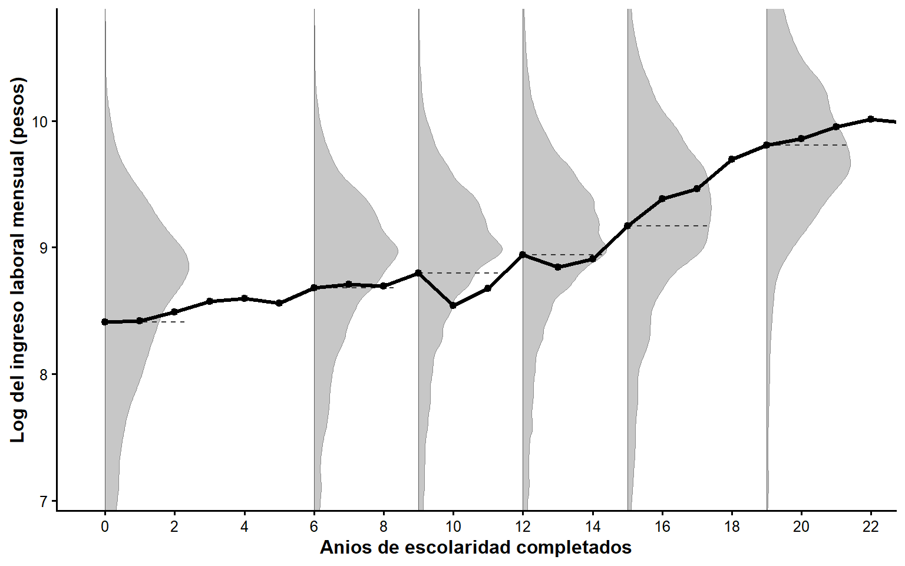

Los datos en data-salud.csv contienen los registros de 915 pacientes que participaron en un ensayo clínico en el que se trabaja con \(\alpha=0.10\). Se incluye un índice de salud que resume la calidad de la salud de cada paciente (a mayor índice de salud mejor es la salud), así como 10 características observadas de dichas personas. Un cuarto de los pacientes fue asignado aleatoriamente a un tratamiento identificado como D en los datos.
[5 puntos] Para verificar la integridad del diseño, compruebe que cada una de las características observables está balanceada. Para ello, estime una regresión de cada una de las características en función de la variable de tratamiento. Construya una tabla con los coeficientes de interés estimados y el valor \(p\) correspondiente.
Aquí corremos una regresión del tipo \[x_{ji}=\gamma+\pi D_i+u_i\] para cada una de las 10 características observadas. Para eficientar el trabajo, hacemos esto en un bucle y guardamos los resultados en una lista. Luego usamos modelsummary para recuperar los resultados que nos interesan y editar la tabla:
db <-read_csv("../files/data-salud.csv")modelos_balance <-list()covariables <-c("edad", "ingreso", "educacion", "imc", "fumador","ejercicio", "cronica", "seguro", "urbano", "mujer")for (v in covariables) { formula_v <-reformulate("D", response = v) modelos_balance[[v]] <-lm(formula_v, data = db)}modelsummary(modelos_balance,coef_map =c("D"),statistic ="{p.value}", gof_map ="nobs",title ="Coeficientes sobre la variable de tratamiento",notes ="Notas: La variable dependiente es cada una de las variables observables a la vez. Se muestra el valor p debajo de cada coeficiente.")
Coeficientes sobre la variable de tratamiento
edad
ingreso
educacion
imc
fumador
ejercicio
cronica
seguro
urbano
mujer
Notas: La variable dependiente es cada una de las variables observables a la vez. Se muestra el valor p debajo de cada coeficiente.
D
0.088
-561.401
-0.312
0.208
0.036
0.036
-0.048
0.011
-0.026
-0.037
0.925
0.391
0.169
0.512
0.272
0.341
0.121
0.771
0.471
0.331
Num.Obs.
915
915
915
915
915
915
915
915
915
915
[2 puntos] ¿Cuál es la hipótesis nula que se plantea al realizar cada una de las regresiones en la parte a.?
Si las medias de cada \(x_{ij}\) entre los grupos de tratados y de control son iguales, esperaríamos que el coeficiente \(\pi\) fuera no significativo, es decir \(H_0: \pi=0\) para cada una de las características observables.
[2 puntos] ¿Qué concluye a partir de las estimaciones de la parte a.?
Con el nivel de significancia de \(\alpha=0.10\), no rechazamos la \(H_0\) en ninguno de los casos, por lo que se concluye que las características están balanceadas entre los grupos de tratamiento.
[5 puntos] Estime ahora una regresión de la variable asignación al tratamiento en función del conjunto de características observables. Luego, realice una prueba \(F\) de significancia conjunta, calculando el estadístico \(F\) y su correspondiente valor \(p\).
Primero estimamos la regresión \(T_i=\alpha+\sum_{j=1}^{10}x_{ji}'\beta +\varepsilon_i\). Luego podemos recuperar el estadístico F directamente del objeto m_bal. Sin embargo, el valor \(p\) es un poco más complicado, dado que modelsummary no expone directamente todo lo que hay dentro del objeto lm. La primera parte del siguiente pedazo de código calcula el valor \(p\) y luego dicho valor es llamado dentro de modelsummary.
m_bal <-lm(reformulate(covariables, response ="D"), data = db)glance_custom.lm <-function(x, ...) { s <-summary(x) fstat <- s$fstatisticdata.frame(F.p.value =pf(fstat[1], fstat[2], fstat[3], lower.tail =FALSE) )}modelsummary(m_bal,gof_map =list(list("raw"="nobs", "clean"="N", "fmt"=0),list("raw"="r.squared", "clean"="R2", "fmt"=2),list("raw"="F", "clean"="F", "fmt"=2),list("raw"="F.p.value", "clean"="F p-value", "fmt"=2) ),notes="Notas: La variable dependiente es la asignación al tratamiento.")
(1)
Notas: La variable dependiente es la asignación al tratamiento.
(Intercept)
0.300
(0.130)
edad
-0.000
(0.001)
ingreso
-0.000
(0.000)
educacion
-0.006
(0.005)
imc
0.002
(0.003)
fumador
0.036
(0.033)
ejercicio
0.032
(0.029)
cronica
-0.055
(0.035)
seguro
0.010
(0.030)
urbano
-0.023
(0.031)
mujer
-0.029
(0.029)
N
915
R2
0.01
F
0.92
F p-value
0.51
[2 puntos] ¿Cuál es la hipótesis nula de la prueba \(F\) que realizó en la parte d.?
Si la integridad del diseño se mantuvo durante el experimento, se esperaría que las características observables no predijeran el estado de tratamiento. En otras palabras, esperaríamos que los coeficientes en su conjunto no fueran significativos. Es decir, \(H_0: \beta_1=\beta_2=\ldots=\beta_k=0\).
[2 puntos] ¿Qué concluye a partir de la prueba \(F\) de la parte d.?
En este caso, el valor \(p\) es alto, es decir, el estadístico \(F\) observado es perfectamente consistente con la hipótesis nula. Por tanto, no rechazamos que los coeficientes sean conjuntamente iguales a cero, es decir, no encontramos evidencia de que las características permitan predecir el estatus de tratamiento. Noten que esto no equivale a demostrar que los coeficientes sean cero; no rechazar una nula nunca prueba que sea cierta.
[2 puntos] ¿Qué concluye sobre el balance en la asignación del tratamiento en este experimento? ¿Qué características tendría una diferencia de medias de \(y_i\) después del tratamiento como estimador del impacto de este?
Las dos pruebas, la comparación variable por variable de la parte a. y la prueba \(F\) conjunta de la parte d., aportan evidencia que indica que la asignación aleatoria fue exitosa y que se construyeron grupos estadísticamente similares de tratamiento y control. Por lo tanto, una comparación de medias de la variable de resultados entre los grupos de tratamiento y control sería un estimador insesgado y consistente para el valor poblacional de dicha diferencia.
Pregunta 2
Considere nuevamente los datos en data-salud-csv.
[2 puntos] Estime el efecto del tratamiento sobre el índice de salud usando una regresión corta (sin controles).
Usamos lm para estimar. Noten el uso de modelsummary para construir tablas con los elementos que estamos acostumbrados a ver en economía:
m_sin <-lm(Y ~ D, data = db) modelsummary(m_sin,coef_map =c("D"="Tratamiento (D)"), statistic ="std.error", stars =c('*'= .10, '**'= .05, '***'= .01), gof_map =c("nobs", "r.squared"),title ="Efecto de tratamiento sin controles")
Efecto de tratamiento sin controles
(1)
* p < 0.1, ** p < 0.05, *** p < 0.01
Tratamiento (D)
7.286***
(1.018)
Num.Obs.
915
R2
0.053
[3 puntos] Interprete el coeficiente y la significancia estadística del efecto de tratamiento estimado.
El tratamiento tiene un efecto causal positivo de 7.29 puntos adicionales en el índice de salud. Notemos que la media del grupo de control del índice es 55.5, por lo que podríamos esperar que el grupo tratado tuviera un índice de salud de aproximadamente 62.8 puntos.
[2 puntos] Estime ahora el efecto del tratamiento sobre el índice de salud usando una regresión larga (incluyendo controles).
Incluimos controles usando reformulate dentro de lm para construir una expresión sin necesidad de escribir todos los elementos dentro de covariables. El efecto estimado es 7.49 puntos adicionales en el índice de salud.
m_con <-lm(reformulate(c("D", covariables), response ="Y"), # con controlesdata = db)modelsummary(m_con,coef_map =c("D"="Tratamiento (D)"),statistic ="std.error",stars =c('*'= .10, '**'= .05, '***'= .01),gof_map =c("nobs", "r.squared"),title ="Efecto de tratamiento con controles")
Efecto de tratamiento con controles
(1)
* p < 0.1, ** p < 0.05, *** p < 0.01
Tratamiento (D)
7.485***
(0.441)
Num.Obs.
915
R2
0.826
[3 puntos] Expliqué qué pasa y por qué con el error estándar estimado del efecto de tratamiento con respecto al estimado en la parte a.
El efecto estimado es muy similar entre las dos especificaciones, sin embargo, el error estándar pasa de 1.0 sin controles a 0.44 con controles. Esto ocurre porque las características observadas son también buenos predictores de la salud, por lo que incluirlas en la regresión reduce la varianza residual. Es apropiado incluirlas porque, como se mostró en la Pregunta 1, estas características no están correlacionadas con la asignación al tratamiento.
Pregunta 3
Un grupo de investigadores está interesado en conocer el impacto de la adopción de herramientas de inteligencia artificial en el empleo en pequeñas y medianas empresas del sector industrial, \(y_i\).
Para responder esta pregunta, los investigadores levantan una encuesta representativa de empresas pequeñas y medianas del sector industrial donde se pregunta sobre el uso de inteligencia artificial en los distintos procesos. Los investigadores construyen un indicador del uso de inteligencia artificial, \(T_i\), además de recolectar información sobre el uso de insumos, ingresos, costos y número de empleados.
[5 puntos] Se propone que, para estimar el efecto causal del uso de inteligencia artificial sobre el empleo, se compare el número de empleados en las empresas que usan dicha tecnología con las que no la utilizan Argumente en términos del sesgo de selección sobre la conveniencia de esta estrategia para estimar el efecto causal de la adopción de herramientas de inteligencia artificial.
Es muy probable que las empresas que deciden adoptar herramientas de inteligencia artificial para eficientar sus procesos sean muy distintas a las que decidieron no adoptar. Las empresas que adoptan seguramente tienen mejores prácticas de gestión, personal más calificado o mayor acceso a financiamiento, características que por sí solas les permitirían emplear a más personas. Por tanto, al comparar el número de empleados de las empresas que adoptaron con el de las que no adoptaron sería imposible aislar el impacto de la adopción. En otras palabras, las empresas que adoptan tendrían un nivel de empleo superior en ausencia de tratamiento que las que no adoptan, es decir, esperaríamos un sesgo de selección positivo. Por tanto, a pesar de que se invirtió una cantidad importante de recursos en levantar una encuesta representativa, el hecho de que la adopción sea una decisión de la propia empresa impide que una comparación observacional permita estimar el efecto causal de la inteligencia artificial sobre el empleo.
[5 puntos] Para implementar la propuesta del punto a., se propone estimar la siguiente regresión: \[ y_i = \alpha + \beta T_i + \varepsilon_i \]
Muestre si el estimador de MCO de \(\beta\) es consistente o no para el efecto de tratamiento.
Estimar una regresión por MCO produciría un estimador \(\hat{\beta}\) inconsistente para el verdadero efecto de tratamiento \(\beta_0\). Para ver esto, recordemos que el estimador de MCO puede reescribirse como sigue:
Si podemos aplicar una LGN a \(\left(N^{-1}\sum x_i x_i'\right)\), sabemos que el límite es una matriz finita y no singular, por lo que su inversa también lo es. Entonces, para que \(\hat{\beta} \overset{p}{\to} \beta_0\) se requiere que, al aplicar una LGN a \(\left(N^{-1}\sum x_i u_i\right)\), la probabilidad límite sea 0. Esto ocurre si \(E(x_iu_i)=0\), es decir, si no hay correlación entre los no observables y los regresores. Por los argumentos hechos arriba, esto es muy probable que se viole pues uno de los regresores es \(T_i\), que está correlacionado con observables y no observables que hacen más o menos probable que una empresa adopte herramientas de inteligencia artificial en sus procesos.
Pregunta 4
Replique el ejercicio en MHE que ejemplifica el teorema de la regresión de la FEC. Para esto se recomienda usar la información de la ENIGH o la ENOE, pero cualquier otra fuente de información representativa que incluya los años de educación y el ingreso será útil.
[5 puntos] Describa la fuente de información que emplea y la muestra con la que realiza las estimaciones.
Yo usé las tablas poblacion (escolaridad, edad, sexo) e ingresos (ingreso por fuente) de la ENIGH 2024. La muestra quedó conformada por personas de 16 a 65 años que trabajaron durante la semana de referencia y con ingreso laboral positivo (claves P001–P008, convertidas de trimestral a mensual). Esto nos da un total de \(N = 103{,}807\) observaciones. Los años de escolaridad se construyen a partir del nivel máximo aprobado (nivelaprob) y el grado (gradoaprob), pues la ENIGH no los reporta directamente. Aquí está cómo construí la muestra:
poblacion <-read_csv("../files/poblacion.csv") |>clean_names()ingresos <-read_csv("../files/ingresos.csv") |>clean_names()# Nos quedamos solo con las variables que necesitamos de la tabla poblacion.poblacion <- poblacion |>select(folioviv, foliohog, numren, sexo, edad, nivelaprob, gradoaprob, trabajo_mp,factor)# Construimos escolaridadpoblacion <- poblacion |>mutate(nivelaprob =as.integer(nivelaprob),anios_escolaridad =case_when( nivelaprob %in%c(0, 1) ~0, nivelaprob ==2~ gradoaprob, nivelaprob ==3~6+ gradoaprob, nivelaprob ==4~9+ gradoaprob, nivelaprob ==5~9+ gradoaprob, nivelaprob ==6~9+ gradoaprob, nivelaprob ==7~12+ gradoaprob, nivelaprob ==8~17+ gradoaprob, nivelaprob ==9~17+ gradoaprob, nivelaprob ==10~19+ gradoaprob,.default=NA ) )# Construimos el ingreso laboral mensual sumando todas las fuentes de ingresoclaves_laborales <-c("P001", "P002", "P003", "P004","P005", "P006", "P007", "P008")ingreso_laboral <- ingresos |>filter(clave %in% claves_laborales) |>summarise(ingreso_laboral_tri =sum(ing_tri, na.rm =TRUE),.by =c(folioviv, foliohog, numren) ) |>mutate(ingreso_laboral = ingreso_laboral_tri /3) base <- poblacion |>left_join(select(ingreso_laboral, folioviv, foliohog, numren, ingreso_laboral),by =c("folioviv", "foliohog", "numren"))#Nos quedamos con observaciones útilesbase <- base |>filter(trabajo_mp ==1, edad >=16, edad <=65,!is.na(ingreso_laboral), ingreso_laboral >0,!is.na(anios_escolaridad))base <- base |>mutate(log_ingreso_laboral =log(ingreso_laboral),mujer =if_else(sexo ==2, 1, 0) )
[5 puntos] Estime una regresión del logaritmo del ingreso en función de la escolaridad usando los microdatos. Luego, obtenga la media del logaritmo del ingreso para cada nivel de educación y estime una regresión de las medias en función del nivel de educación, usando como pesos en la regresión el número de observaciones usadas para construir cada media. Compare los coeficientes estimados.
Corramos la regresión con los microdatos construidos en la parte a.:
m_micro <-lm(log_ingreso_laboral ~ anios_escolaridad, data = base)
Ahora obtenemos la media del (log) ingreso por cada año de escolaridad, conservando el número de observaciones de cada media, y estimamos la regresión de las medias ponderando por ese número:
La pendiente es idéntica en ambas regresiones (\(\hat\beta = 0.068\)): cada año de escolaridad se asocia con un incremento de 6.8% en el ingreso.
[5 puntos] Realice una figura análoga a la figura 3.1.1 en MHE, usando los datos que construyó para esta pregunta.
La siguiente gráfica reproduce la Figura 3.1.1 de MHE con datos de la ENIGH 2024: la FEC (media de log-ingreso por año de escolaridad, línea gruesa de puntos) junto con las densidades del log-ingreso en escolaridades selectas (0, 6, 9, 12, 15 y 19 años) y la media condicional (línea punteada) en cada una:
#Obtenemos la media del log del ingreso laboralcef <- base |>summarise(m =mean(log_ingreso_laboral), .by = anios_escolaridad) |>arrange(anios_escolaridad)niveles <-c(0, 6, 9, 12, 15, 19)ancho <-2.4# construimos, el polígono de cada densidad rotadapoligonos <-list()segmentos <-tibble()for (s in niveles) { x <- base |>filter(anios_escolaridad == s) |>pull(log_ingreso_laboral) d <-density(x) ancho_i <- ancho * d$y /max(d$y)# poligono: sube por la densidad y regresa por la vertical (x = s) poligonos[[as.character(s)]] <-tibble(px =c(s + ancho_i, rep(s, length(d$x))),py =c(d$x, rev(d$x)),nivel = s)# linea punteada horizontal en la media condicional de ese nivel m_s <-mean(x) segmentos <-bind_rows(segmentos, tibble(anios_escolaridad= s, m = m_s, xend = s + ancho *0.95))}poly_df <-bind_rows(poligonos)ggplot() +# densidades rotadas (gris)geom_polygon(data = poly_df, aes(x = px, y = py, group = nivel),fill ="grey78", colour ="grey55", linewidth =0.25) +# lineas verticales en las escolaridades selectasgeom_vline(xintercept = niveles, colour ="grey35", linewidth =0.3) +# linea punteada horizontal en la media condicionalgeom_segment(data = segmentos, aes(x = anios_escolaridad, xend = xend, y = m, yend = m),linetype ="dashed", colour ="grey20", linewidth =0.4) +# CEF: linea gruesa con puntosgeom_line(data = cef, aes(x = anios_escolaridad, y = m), linewidth =1.2, colour ="black") +geom_point(data = cef, aes(x = anios_escolaridad, y = m), size =1.8, colour ="black") +scale_x_continuous(breaks =seq(0, 22, 2),labels =seq(0, 22, 2)) +scale_y_continuous(breaks =seq(7, 10, 1)) +# zoom al rango relevante (como en MHE): recorta las colas de las densidades# sin borrar datos, para que la CEF y las densidades resaltencoord_cartesian(xlim =c(-0.3, 21.6), ylim =c(7.1, 10.7)) +labs(x ="Anios de escolaridad completados",y ="Log del ingreso laboral mensual (pesos)") +theme_classic(base_size =12) +theme(panel.grid =element_blank(),axis.title =element_text(face ="bold"))

Pregunta 5
Use los datos del archivo merged_all_surveys.dta para este problema. En este problema replicará la fila correspondiente a la variable Sales in past month (ventas del mes anterior) de la Tabla 1 en Davies et al. (2023).1
[5 puntos] Obtenga la media y la desviación estándar de las ventas del mes anterior al momento de la línea base, sales_4w_base en los datos, para replicar lo que se reporta en las columnas (1) y (2).
Calculamos las estadísticas.
datos <-read_dta("../files/merged_all_surveys.dta")datos |>summarise(m =mean(sales_4w_base),sd =sd(sales_4w_base))
# A tibble: 1 × 2
m sd
<dbl> <dbl>
1 7824. 15096.
[5 puntos] Obtenga la media de las ventas del mes anterior al momento de la línea base, sales_4w_base en los datos, para los grupos de control y tratamiento, para replicar lo que se reporta en las columnas (3) y (4).
Usamos la opción .by para calcular las estadísticas por grupos. Un enfoque anterior dentro de tidyverse empleaba group_by() para agrupar primero los datos y luego usaba summarise con los datos agrupados. Considero que el enfoque más moderno de .by es más limpio.
datos |>summarise(m =mean(sales_4w_base),sd =sd(sales_4w_base),.by = treat_1_or_3)
[5 puntos] Usando una regresión lineal, realice una prueba de balance para comprobar que las ventas del mes anterior al momento de la línea base no difieren entre el grupo de control y el de tratamiento. Reporte el valor \(p\) correspondiente a dicha prueba (columna 5). Preste atención a los controles que se usan para realizar dicha prueba.
Para realizar esta prueba tenemos que considerar que los autores controlan por efectos fijos por estrato. Luego reportamos el valor \(p\) de la prueba de hipótesis sobre el balance de las ventas del mes anterior entre los grupos de control y tratamiento.
(1)
treat_1_or_3
127.975
t=0.258
s.e.=495.554
p=0.796
Num.Obs.
2208
[5 puntos] En la parte superior de la Tabla 1 los autores reportan un valor \(p\) que dice (Joint = .5). Este es el valor \(p\) de una prueba de significancia conjunta en la que la hipótesis nula es que los covariables reportados en la tabla no predicen conjuntamente el tratamiento, controlando por los efectos fijos de estrato. Obtenga dicho valor \(p\) usando los datos. Los covariables que se reportan en la tabla son:
La pregunta no es difícil de responder. Lo que los autores buscan mostrar es si los coeficientes de la regresión son iguales a cero conjuntamente, pero en dichos coeficientes no se incluyen los coeficientes de los efectos fijos. Entonces, una forma simple de hacer esta prueba es estimar dos modelos, uno sin los covariables y otro con los covariables, pero ambos con los efectos fijos. Luego usamos anova para probar la diferencia entre los modelos, de donde rescatamos la prueba \(F\) y su correspondiente valor \(p\).
Nuevamente, use los datos del archivo merged_all_surveys.dta. En este problema, replicará las columnas del efecto de tratamiento después de 2 meses de la intervención, reportados en la Tabla 2.
[5 puntos] ¿Cuál es el valor de las ventas reportadas en la encuesta de seguimiento dos meses después de la intervención, sales_4w_end, para el grupo de control? Con esto debería replicar la columna (2) de la Tabla 2.
En el grupo de control, dos meses después de que se llevó a cabo la intervención, las ventas ascienden a 17,023, lo reportado en la Tabla 2.
datos |>summarise(m =mean(sales_4w_end, na.rm=T),sd =sd(sales_4w_end, na.rm=T),.by = treat_1_or_3)
[5 puntos] Estime el efecto del tratamiento sobre sales_4w_end controlando por efectos fijos de estrato y con errores estándar robustos a la heterocedasticidad. Interprete sus resultados y compárelos con los que los autores presentan en la columna (3) de la Tabla 2.
El impacto del programa en las ventas es positivo y estadísticamente significativo al 5%, incrementando las mismas en $4,394. Sin embargo, el impacto estimado es algo mayor al reportado en el artículo (4,112). El error estándar estimado de 1795 también es considerablemente mayor al reportado (1,461).
Noten que podemos estimar lo mismo, de forma más eficiente, usando la función feols del paquete fixest. Cuando los efectos fijos son muchos, es poco eficiente hacer la estimación usando dummies.
(1)
(2)
* p < 0.1, ** p < 0.05, *** p < 0.01
treat_1_or_3
4393.429**
4393.429**
(1794.915)
(1794.915)
Num.Obs.
1591
1591
R2
0.284
0.284
[5 puntos] Explique por qué difieren los resultados que obtuvo en la parte b. con los que los autores reportan en la Tabla 2.
Existen dos principales razones por las cuales el resultado difiere con respecto al del artículo. El primero, como se indica en el pie de tabla, los autores controlan por características observadas (regresión larga). Sin embargo, la selección de qué covariables incluir en cada estimación se realiza a través de un LASSO. La segunda razón es que los autores incluyen como control el valor en la línea base de las ventas, lo cual se conoce como ANCOVA y revisaremos más adelante. Al incluir estos dos cambios obtenemos lo siguiente:
Controles seleccionados por LASSO: acc_fin_practices_base
(1)
(2)
(3)
* p < 0.1, ** p < 0.05, *** p < 0.01
treat_1_or_3
4393.429**
4393.429**
4144.252***
(1794.915)
(1794.915)
(1540.424)
Num.Obs.
1591
1591
1591
R2
0.284
0.284
0.442
Notas
Davies, E., Deffebach, P., Iacovone, L., & McKenzie, D. (2023). Training Microentrepreneurs Over Zoom: Experimental Evidence from Mexico. Journal of Development Economics, 167, 103244.↩︎